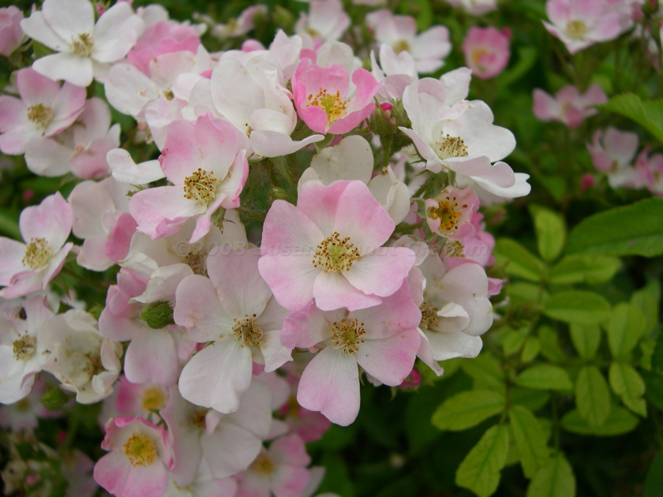
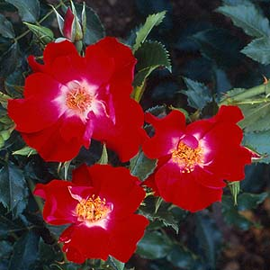
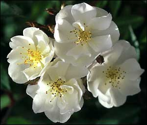

Shrub Roses
Tweet Follow @111iamtestShrub roses encompass a wide range of rose types which makes them a very diverse group. It seems that any rose that does not fit another category becomes a shrub rose and in turn their winter hardiness varies. Many shrub roses result from crossing old-rose types with modern roses and therefore combine the best traits of each: repeat flowering rose bushes and a great range of colors from the Modern Roses, and the fragrance, wide range of flower styles, growth habits, and also the delicate color from the Old Garden Roses. Many Shrub Roses are good for screens, hedges, and mass planting. Shrub Roses also make great single specimen plantings. Virtually all shrub rose bushes are repeat blooming.

Ballerina
This shrub rose was hybridized by Bentall in 1937. It is a medium, vigorous, and bushy rose that reaches 5 feet in height. It has a small, dark green, and glossy foliage. It produces single, light pink blooms with white eyes, 5 to 7 petals each. The small blooms are shallowly cupped and appear in large clusters that are reminiscent of hydrangea bushes. The rose possesses slight fragrance. This hardy plant is ideal for any landscape design or mass planting.

Dortmund
This shrub rose was hybridized by Kordes in 1955. It is a vigorous, climbing rose that reaches 10 or more feet in height. It has a dark green, and glossy foliage. It produces large, strawberry red blooms with white eyes, 5 to 8 petals each. It possesses moderate fragrance. The rose won two awards: Anerkannte Deutsch Rose 1954 and Portland Gold Medal 1971. This is a hardy, disease-resistant shrub that also works well as a climber. It produces abundant blooms throughout the growing season.

Darlow's Enigma
This shrub rose was discovered by Mike Darlow of Oregon in 1993, who helped get it into commercial production. It is a vigorous, upright, and bushy plant that reaches 6 to 8 feet in heigh. It has a small, dark green, glossy, and disease resistant foliage. It produces pure white blooms with golden stamens, 5 petals each. It possesses intense honey fragrance. This hardy bush seems to do well in all climates. It is a beautiful plant even without blooms, due to its dark green, glossy foliage, however, it is seldom without blooms during the growing season.